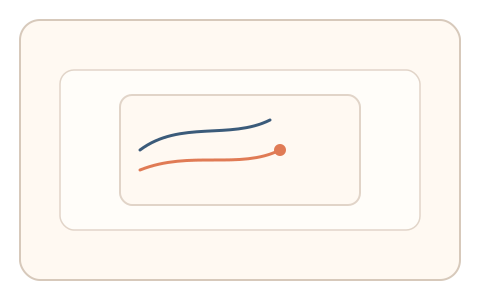

#110
Morphological Analysis - Combination Batches
已扩展
滚动惯性回放
记录用户一次真实滚动的惯性曲线，异步微任务要求匹配该曲线，以预测误差验证真实性。
概念原文
记录用户一次真实滚动的惯性曲线，异步弹出微任务要求匹配该曲线，系统以预测误差与群体基线判定。任务结构为异步验证，信号形态为预测误差。
把“真实滚动惯性”变成不可复刻的时间签名。
研究背景
真实滚动会形成独特的惯性衰减曲线，脚本难以跨时复刻。异步匹配任务可以检验用户对自身惯性节奏的记忆与一致性。
核心机制
- 记录用户真实滚动的速度‑时间曲线。
- 稍后弹出微任务要求匹配惯性曲线。
- 计算预测误差与相似度。
- 与群体基线分布比对判定。
用户流程
- 步骤 1：用户正常滚动页面，系统记录惯性曲线。
- 步骤 2：异步出现匹配惯性的微任务。
- 步骤 3：系统计算误差并判定。
判定信号
惯性衰减曲线
真实滚动具有自然的速度衰减形态。
预测误差
真实用户更容易匹配自己的惯性节奏。
判定逻辑
匹配误差需落在人类分布区间，且曲线形态合理；过度完美或无一致性判异常。
对抗面
- 脚本记录并重放惯性曲线
- 伪造固定衰减曲线
防御与缓解
- 随机化异步触发时机
- 绑定上下文与滚动环境参数
- 叠加反应时与停顿信号
可达性与风险
提供可跳过或简化任务，避免打断体验。
- 异步任务可能引起困惑
- 触控与鼠标滚动差异较大
可视化状态
状态 1：惯性记录
记录真实滚动惯性曲线。

状态 2：曲线匹配
异步微任务匹配惯性曲线。

状态 3：误差判定
计算预测误差与一致性。